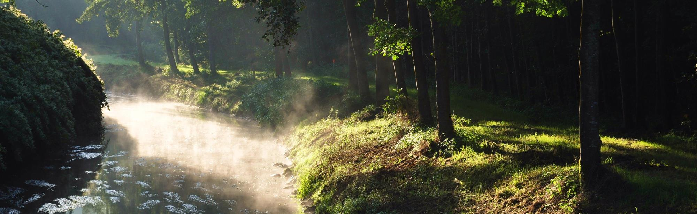

<!DOCTYPE html>
<html>
    <head>
        <title>Hoensbroek</title>
        <link rel="stylesheet" href="style/style.css">
    </head>
</html>
<body>
    <div class="grid-container">
        <div class="banner"><span>Hoensbroek</span></div>
        <div class="main-left"><ul>
            <li>
                <h4>Ontstaan</h4>
                <p>
                Hoensbroek heette aanvankelijk Broek of Broich, hetgeen 'moeras' betekent. (De Limburgse aanduiding Gebrook betekent
                niets anders dan 'het moeras'.) In 1388 werd het afgescheiden van Heerlen en geschonken aan ridder Herman Hoen, wiens
                familie van dan af Hoen van den Broeck, later Van Hoensbroeck zou heten en een van de aanzienlijkste adellijke families
                in Limburg werd. Deze Herman Hoen bouwde vervolgens het kasteel, dat nu Kasteel Hoensbroek heet en was er de eerste
                bewoner van. Op deze plaats had vanaf de dertiende eeuw al een motte en een verdedigingswerk gestaan. Hoensbroek is de
                samenvoeging van 'Hoens zu Broeck'.
                </p>
            </li>
            <li>
                <h4>Staatkundige situatie</h4>
                <p>
                De heerlijkheid Hoensbroek viel onder de zogeheten Landen van Overmaas, die tezamen met het oude hertogdom Limburg na
                1288 onder Brabants bestuur waren gekomen. In 1473 verenigden de Overmazers en de Limburgers hun Staten tot de Staten
                van Limburg en de Landen van Overmaas en zetelden aldus in de Staten-Generaal van de Nederlanden. In 1661 kwam het
                gebied in Spaanse handen en van 1713 tot 1785 viel het onder Oostenrijk.
                </p>
            </li>
            <li>
                <h4>Steenkoolwinning</h4>
                <p>
                Het dorp bleef bescheiden van omvang tot het begin van de 20e eeuw, toen er meerdere steenkolenmijnen werden geopend
                (onder andere de Staatsmijn Emma), die voor een aanzienlijke toename van de bevolking zorgden. Dit maakte de bouw van
                nieuwe woonwijken noodzakelijk, met als gevolg dat Heerlen en Hoensbroek steeds dichter naar elkaar toe groeiden.
                </p>
            </li>
            <li>
                <h4>Heden</h4>
                <p>
                Tegenwoordig vormen Heerlen en Hoensbroek een aaneengesloten bebouwd gebied. Alleen de steenberg van de voormalige
                Oranje Nassau III-mijn, die thans is ingericht als park en 'Koumenberg' wordt genoemd, vormt nog een soort van barrière
                tussen de plaatsen. De mijnen in de regio zijn inmiddels allemaal gesloten, maar veel van de ervoor aangelegde
                arbeiderswijken bestaan nog.
                </p>
            </li>
            <li>
                <h4>Wapen</h4>
                <p>
                Het wapen van Hoensbroek toont een zwarte leeuw op een zilveren veld met vier horizontale rode balken. Het is het wapen
                van de familie Van Hoensbroeck, naar wie de voormalige gemeente en het huidig stadsdeel Hoensbroek is genoemd. In het
                nieuwe wapen van de gemeente Heerlen neemt dat van Hoensbroek de rechterhelft in. Daarmee wordt tot uitdrukking gebracht
                dat Hoensbroek ook historisch gezien geen stadsdeel is van Heerlen, maar dat het binnen de gemeente een aanzienlijke
                eigen positie inneemt. Door de samenvoeging zijn Heerlen en Hoensbroek juridisch weer terug bij af, nadat zes eeuwen
                eerder Hoensbroek van de heerlijkheid Heerlen was afgesplitst.
                </p>
            </li>
        </ul></div>
        <div class="main-right">
            <article class="article">
                <h2>Geleenbeekdal</h2>
                
                <p>
                De Geleenbeek ontspringt in het Heerlense Benzenrade en mondt bij Stevensweert uit in de Maas. De oude beek en het
                beekdal zijn de afgelopen decennia prachtig in ere hersteld na schade van de voormalige mijnindustrie. Het Geleenbeekdal
                strekt zich ver uit en brengt onverwacht groen in stedelijk gebied.

                Rondom de Geleenbeek was het van oudsher al goed toeven. Er zijn nog steeds veel kastelen te vinden, waaronder Kasteel
                TerWorm en Kasteel Hoensbroek. Rondom Schinnen ligt een rustig stuk Geleenbeekdal dat ook het ontdekken waard is.                
                </p>
            </article>
            <article class="article">
                <h2>Kasteel Hoensbroek</h2>
                
                <p>
                Kasteel Hoensbroek of Gebrookhoes (Kasteel Gebrook) is een van de grootste kastelen van Nederland. Het oudste gedeelte
                van het kasteel, met name de hoge ronde toren, dateert van rond 1360, toen Herman Hoen het verbouwde. In 1225 was er in
                dit moeras (of gebrook) al een voorloper, een zogeheten motte-burcht. In 1250 werd op de plaats van het huidige kasteel
                een versterkt huis gebouwd. Vanwege zijn voor Limburg zeer strategische ligging aan de belangrijke handelsroutes naar
                Maastricht, Aken en Keulen werd het kasteel in opeenvolgende fasen uitgebouwd tot de grootste burcht tussen Maas en
                Rijn. Het bevat 67 zalen, vertrekken en ruimtes.

                Samen met het Thermenmuseum en het streekarchief Rijckheyt maakt het kasteel deel uit van Historisch GOUD, het
                erfgoedbedrijf van de gemeente Heerlen.                
                </p>
            </article>

        </div>
        <div class="footer">
            <div class="sources">
                Bron:&nbsp;
                <a href="https://nl.wikipedia.org/wiki/Kasteel_Hoensbroek">Wikipedia</a>&nbsp;-&nbsp;
                <a href="www.visitzuidlimburg.nl">VisitZuidLimburg.nl</a>
            </div>
            <div class="copyright">&copy; Jelle</div>                
        </div>
    </div>
</body>